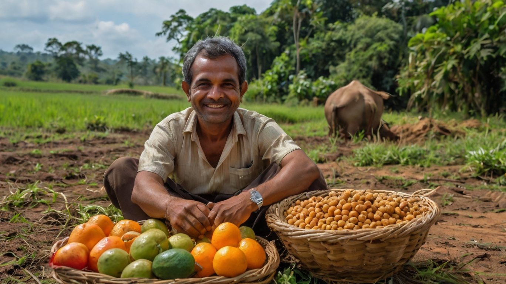
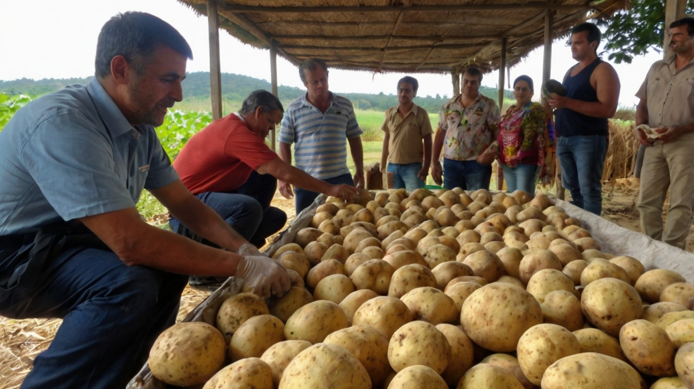

1. Produção no Campo
O processo começa nas fazendas e campos, onde agricultores cultivam frutas, verduras, grãos e criam animais. Eles utilizam técnicas modernas e tradicionais para garantir a qualidade e a quantidade dos alimentos.
2. Colheita e Armazenamento
Quando os alimentos estão prontos, são colhidos e armazenados em condições adequadas para garantir que permaneçam frescos e seguros. Grãos são secos e armazenados em silos, enquanto frutas e verduras são refrigeradas.
3. Transporte
Os alimentos são então transportados do campo para os centros de distribuição. Esse transporte pode ser feito por caminhões, trens ou até mesmo navios, dependendo da localização e do tipo de alimento. Durante o transporte, é crucial manter a qualidade do alimento com condições de temperatura e umidade controladas.
4. Processamento e Embalagem
Em alguns casos, os alimentos são levados para fábricas onde passam por processamento e embalagem. Isso pode incluir a lavagem, corte, preparo e embalagem dos alimentos para garantir que estejam prontos para o consumo e bem preservados.
5. Distribuição
Após o processamento, os alimentos são distribuídos para mercados, supermercados e outros pontos de venda nas cidades. Empresas de distribuição e redes de supermercados são responsáveis por garantir que os alimentos cheguem em boas condições e a tempo.
6. Vendas e Consumo
Finalmente, os alimentos chegam às lojas e supermercados, onde os consumidores na cidade podem comprá-los. Uma vez comprados, os alimentos são levados para as casas dos consumidores, onde são preparados e consumidos.
Esse ciclo garante que os alimentos frescos e saudáveis produzidos no campo possam chegar às cidades e estar disponíveis para todos. Se precisar de mais detalhes ou informações específicas, estou à disposição!